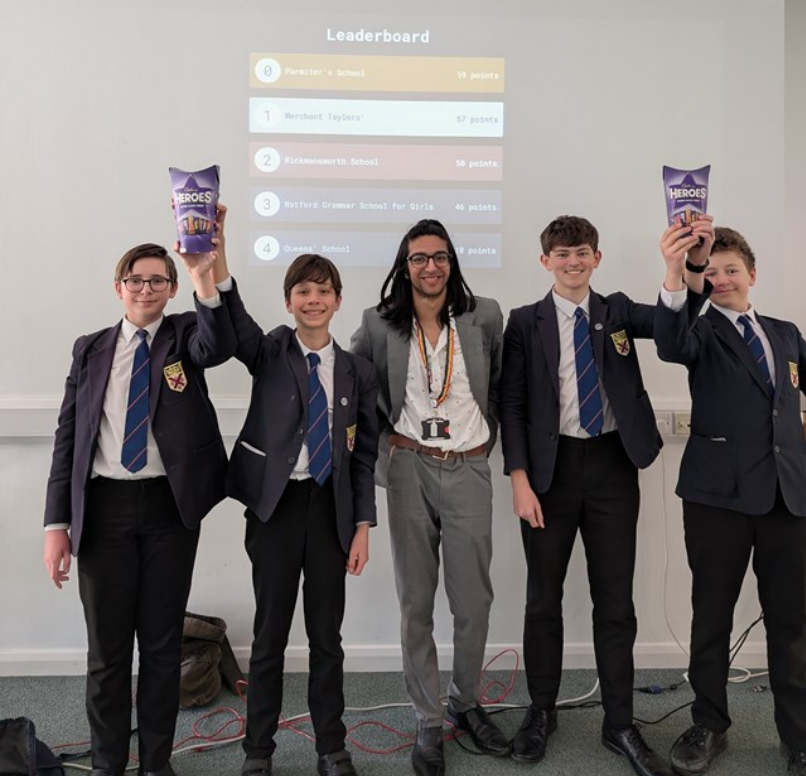

Parmiter's School Hackathon
November 2023 - May 2025
Hackathon Club
In November of 2023, I co-founded the Hackathon Club at Parmiter's School, alongside 2 other Sixth Form pupils. This was set up to help keen computer scientists in areas they may struggle/be unfamiliar with, namely using the terminal and alternative operating systems (e.g. Linux and Raspbian OS). Running this club involved having educational sessions and workshops for students, yet ensuring that these were still fun and engaging as this had voluntary participation, after all! Each week, we would use a combination of teaching a feature and allowing students to experiment with these themselves. We often created contained virtualised spaces for these to allow students to experiment freely with no risks, often using Raspberry Pi's with a custom interface. One of the main messages driven throughout this club was the importance of ethical hacking, whereby such practices should only be used with permission and for a productive outcome (i.e. testing). Students were also taught about computer viruses, web development, networks, and the internet. This club ran for the whole academic year, and was ran again by us the following year.
Hackathon Competition
After starting the new academic year in September 2024, we had an idea to open up this club to other schools, and ultimately agreed that a great way to do this was to host a Hackathon event to allow students to put their skills to the test and compete against other local schools. This task involved 7 months of planning to ensure that this event ran smoothly. We decided that the other leaders of the club would create the challenges for the Hackathon event, whilst I would be the team leader for the Parmiter's School team. In order to prevent having an unfair advantage, I was not involved in the creation of the challenges and only had access to these on the day of the event, however I was heavily involved in the creation of the custom OS and ensuring that the hardware ran successfully on a localised network - we had to ensure that no devices had internet access (for both cheating purposes and isolation for ultimate safety), but devices remained connected to the central 'host' device.
After extensive planning, we hosted this event on Wednesday 5th March, in which Queen's School, Rickmansworth School, Watford Grammar School for Girls and Merchant Taylor's School competed in. Part of my role as team leader was to choose 4 students out of 20+ members of the club to take part in the competition, which I used previous experience in the weekly club to select the most suitable candidates. The Hackathon comprised a combination of different coding challenges that required us to use a variety of languages such as Python, JavaScript and SQL. Due to our team's coding experience and my allocation of tasks throughout the event, we were able to win the Hackathon, narrowly beating Merchant Taylors' by only 2 points! This was a great achievement for us, and we were very proud of our success. We also received positive feedback from the other schools and participants, who enjoyed the event and found it to be a valuable learning experience. Overall, this was a great experience for me and the other leaders of the club, and we were glad to have been able to provide such an opportunity for students in our local area.
After extensive planning, we hosted this event on Wednesday 5th March, in which Queen's School, Rickmansworth School, Watford Grammar School for Girls and Merchant Taylor's School competed in. Part of my role as team leader was to choose 4 students out of 20+ members of the club to take part in the competition, which I used previous experience in the weekly club to select the most suitable candidates. The Hackathon comprised a combination of different coding challenges that required us to use a variety of languages such as Python, JavaScript and SQL. Due to our team's coding experience and my allocation of tasks throughout the event, we were able to win the Hackathon, narrowly beating Merchant Taylors' by only 2 points! This was a great achievement for us, and we were very proud of our success. We also received positive feedback from the other schools and participants, who enjoyed the event and found it to be a valuable learning experience. Overall, this was a great experience for me and the other leaders of the club, and we were glad to have been able to provide such an opportunity for students in our local area.


Parmiter's School, Winning Team
Custom-Made Operating System